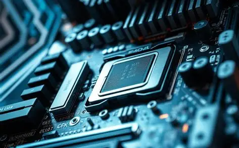

Hardware y Software
El hardware y el software son los componentes fundamentales de los sistemas informáticos. El hardware se refiere a los componentes físicos del sistema, mientras que el software se refiere a los programas y aplicaciones que se ejecutan en el sistema.


Hardware
- CPU (Unidad Central de Procesamiento): el cerebro del sistema informático, responsable de ejecutar instrucciones y realizar cálculos.
- Memoria RAM: memoria de acceso aleatorio, donde se almacena la información temporalmente mientras se está utilizando.
- Disco duro: dispositivo de almacenamiento permanente, donde se almacenan los programas y datos.
- Tarjeta gráfica: componente responsable de renderizar imágenes y gráficos en la pantalla.
- Placa base: placa principal del sistema informático, que conecta todos los componentes hardware.
Software
- Sistema operativo: software que gestiona los recursos del sistema informático y proporciona una plataforma para ejecutar aplicaciones.
- Aplicaciones: software que realiza tareas específicas, como procesamiento de texto, edición de imágenes o juegos.
- Programas de utilidad: software que realiza tareas de mantenimiento y configuración del sistema, como antivirus y herramientas de limpieza.
- Software de desarrollo: software que se utiliza para crear otros programas y aplicaciones, como lenguajes de programación y entornos de desarrollo.
Tipos de software
- Software de sistema: software que gestiona los recursos del sistema informático y proporciona una plataforma para ejecutar aplicaciones.
- Software de aplicación: software que realiza tareas específicas, como procesamiento de texto o edición de imágenes.
- Software de desarrollo: software que se utiliza para crear otros programas y aplicaciones.
- Software de entretenimiento: software que proporciona entretenimiento, como juegos y contenido de video.
Importancia del hardware y software
- Eficiencia: el hardware y software adecuados pueden mejorar la eficiencia y productividad del sistema informático.
- Compatibilidad: el hardware y software compatibles pueden garantizar que los componentes del sistema funcionen correctamente.
- Seguridad: el hardware y software seguros pueden proteger la información y los sistemas informáticos de posibles amenazas.
- Innovación: el hardware y software innovadores pueden proporcionar nuevas funcionalidades y capacidades.
Desafíos del hardware y software
- Compatibilidad: la compatibilidad entre diferentes componentes de hardware y software puede ser un desafío.
- Seguridad: la seguridad del hardware y software es un desafío constante, ya que las amenazas cibernéticas están en constante evolución.
- Actualizaciones: las actualizaciones de hardware y software pueden ser necesarias para mantener la compatibilidad y seguridad del sistema.
- Costo: el costo del hardware y software puede ser un desafío para individuos y organizaciones.
La comprensión del hardware y el software es fundamental para entender cómo funcionan los sistemas informáticos y cómo se pueden utilizar para realizar tareas y actividades. Es importante elegir el hardware y el software adecuados para las necesidades específicas de cada usuario o organización.